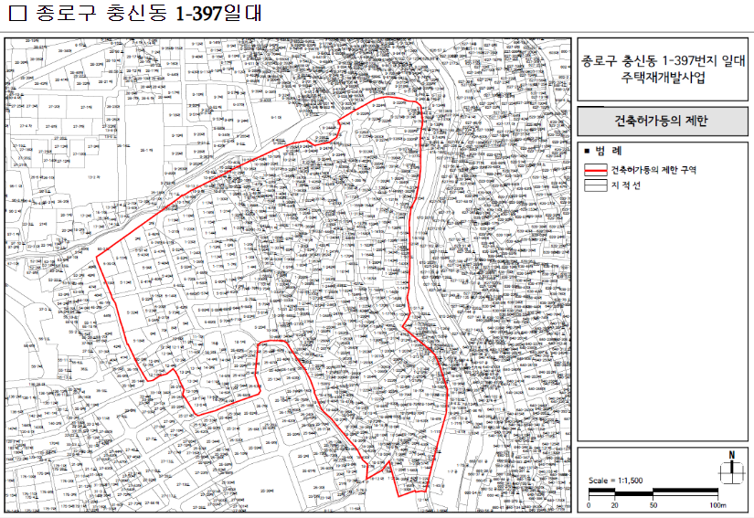

✨ 사업 개요: 새로운 충신동의 비전
충신동 재개발 사업은 역사와 문화가 살아 숨 쉬는 한양도성 인접 지역의 특성을 보존하면서, 쾌적하고 편리한 주거 환경을 조성하기 위한 통합적인 도시재생 프로젝트입니다. '신속통합기획'을 통해 사업 기간을 단축하고 투명성을 확보하여 주민 여러분의 만족도를 높이는 것을 최우선 목표로 합니다.
본 사업은 단순한 주거 공간 개선을 넘어, 지역 공동체의 활성화와 지속 가능한 도시 발전에 기여할 것입니다. 충신동의 미래를 함께 그려나가는 이 여정에 주민 여러분의 깊은 관심과 참여를 부탁드립니다.
✔ 신속통합기획의 장점
- 신속한 사업 추진: 서울시의 적극적인 지원으로 복잡한 절차를 간소화하여 사업 기간을 대폭 단축합니다.
- 투명하고 공정한 과정: 서울시와 주민이 함께 계획을 수립하여 모든 과정이 투명하게 공개되고, 주민 의견이 적극 반영됩니다.
- 맞춤형 도시계획: 지역 특성을 고려한 유연한 도시계획을 통해 충신동만의 특색 있는 주거단지를 조성합니다.
- 재정적 지원: 공공 지원을 통해 사업의 안정성을 높이고, 주민 부담을 줄이는 데 기여합니다.
⚠️ 현재 당면 과제: 통합의 절실함
존경하는 토지등소유자 여러분, 현재 충신동 재개발 사업은 중대한 기로에 서 있습니다. 우리 지역의 재개발 추진을 위한 주민들의 염원은 뜨겁지만, 안타깝게도 **두 개의 추진위원회가 각기 다른 구역계(안)로 주민 동의를 얻어 접수하려 하면서, 중복 접수로 인해 행정기관으로부터 무효 처리되는 상황이 반복되고 있습니다.**
이는 불필요한 사업 지연을 초래하고 있으며, 귀한 시간과 자원의 낭비로 이어지고 있습니다. 구청의 공고(종로구 공고 2024-586호, 2024.5.1.)에 따라 건축허가 제한까지 시행되고 있는 지금, 우리에게 가장 시급한 것은 **내부 갈등을 해소하고 하나의 강력한 추진 동력을 만드는 것**입니다.
저희 **충신동 재개발 통합 추진위원회**는 이러한 문제를 해결하고 오직 재개발의 성공이라는 하나의 목표를 향해 나아가기 위해, **민주적인 절차에 따른 추진위원회 통합의 길**을 모색하고 있습니다. 누가 옳고 그르냐를 따지기보다, 모두가 한마음으로 뭉쳐야만 비로소 신속하고 투명한 재개발이 가능하다고 믿습니다.
**가장 민주적이고 주민 수용성이 높은 결정을 위해 토지등소유자 전체 총회 개최를 제안합니다.** 총회에서 결정된 바를 양측이 이의 없이 수용함으로써, 더 이상 중복 접수로 인한 무효 처리 없이 하나의 구역계(안)를 마련하여 신속통합기획 절차를 원활히 진행할 수 있을 것입니다. 이는 곧 우리 충신동의 미래를 결정짓는 중대한 약속이 될 것입니다.
⏳ 추진 경과
2025년 [07월]: 토지등소유자 전체 총회 추진 (현 단계)
두 추진위원회 간의 통합 및 단일된 사업 추진 방향 결정을 위한 민주적 절차 모색. 종로구청과 협의 중.
2024년 하반기 ~ 2025년 상반기: 구역계(안) 중복 접수 및 무효 처리 반복
두 개의 추진위에서 각각 구역계(안)를 접수하려 시도하였으나, 중복으로 인한 행정 처리 불가로 사업 진척에 어려움.
2024년 05월: 종로구청 건축허가 제한 공고 (종로구 공고 2024-586호)
주택재개발사업 후보지 내 무분별한 건축행위 방지 및 원활한 정비사업 추진을 위한 건축허가 제한 시행.
2024년 초: 충신동 재개발 관심 증대 및 추진위 활동 시작
신속통합기획 등 서울시 정책 변화에 따라 충신동 재개발에 대한 주민들의 관심 증대 및 추진위원회 활동 본격화.
(과거 이력 추가 가능): 이전 재개발 사업 추진 및 무산 등
(예: 20XX년: 과거 재개발 사업 추진 시도 / 20XX년: 사업 추진 지연 및 직권해제 등)
🗺️ 사업 위치 및 구역도
충신동 재개발 사업은 종로구 충신동 1-397번지 일대 약 **49,250㎡** 규모로 진행되며, 지리적 이점을 활용하여 도심 속의 쾌적한 주거 공간을 목표로 합니다.
(※ 위 이미지는 이해를 돕기 위한 예시 구역도이며, 실제 계획에 따라 변동될 수 있습니다.)
💡 향후 계획 (예정)
- **[통합 총회 성공 시] 2025년 하반기:** 신속통합기획 구역계(안) 단일 접수 및 서울시 검토 시작
- **[통합 총회 성공 시] 2026년 상반기:** 신속통합기획 1단계 승인 (사업 구역 확정 및 기본 구상안 발표)
- **2026년 하반기 ~ 2027년:** 정비구역 지정 및 사업시행자 선정
- **2027년 이후:** 건축 심의 및 사업시행계획인가, 관리처분계획인가 및 이주·철거 시작
*상기 일정은 인허가 진행 상황 및 **추진위원회 통합 여부에 따라 크게 변동될 수 있습니다.**